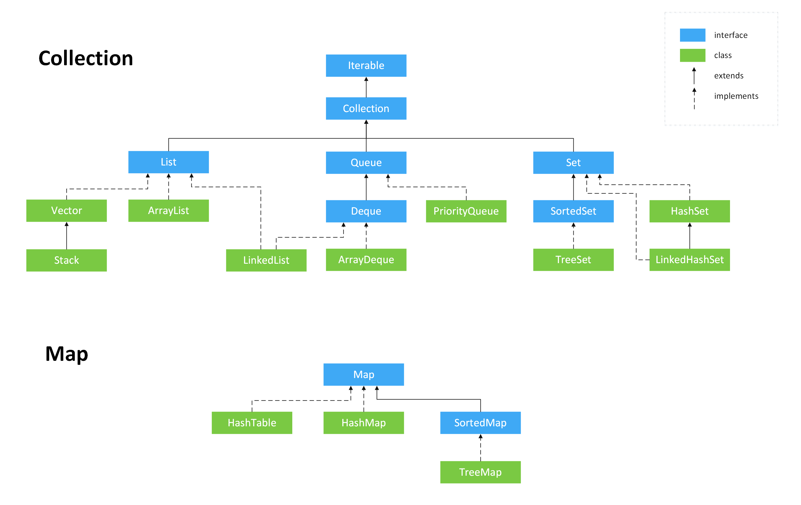

- 1. 剖析面试最常见问题之 Java 集合框架
- 1.1. 集合概述
- 1.1.1. Java 集合概览
- 1.1.2. 说说 List, Set, Queue, Map 四者的区别？
- 1.1.3. 集合框架底层数据结构总结
- 1.1.4. 如何选用集合?
- 1.1.5. 为什么要使用集合？
- 1.2. Collection 子接口之 List
- 1.2.1. Arraylist 和 Vector 的区别?
- 1.2.2. Arraylist 与 LinkedList 区别?
- 1.2.3. 说一说 ArrayList 的扩容机制吧
- 1.3. Collection 子接口之 Set
- 1.3.1. comparable 和 Comparator 的区别
- 1.3.2. 无序性和不可重复性的含义是什么
- 1.3.3. 比较 HashSet、LinkedHashSet 和 TreeSet 三者的异同
- 1.4 Collection 子接口之 Queue
- 1.4.1 Queue 与 Deque 的区别
- 1.4.2 ArrayDeque 与 LinkedList 的区别
- 1.4.3 说一说 PriorityQueue
- 1.5. Map 接口
- 1.5.1. HashMap 和 Hashtable 的区别
- 1.5.2. HashMap 和 HashSet 区别
- 1.5.3. HashMap 和 TreeMap 区别
- 1.5.4. HashSet 如何检查重复
- 1.5.5. HashMap 的底层实现
- 1.5.6. HashMap 的长度为什么是 2 的幂次方
- 1.5.7. HashMap 多线程操作导致死循环问题
- 1.5.8. HashMap 有哪几种常见的遍历方式?
- 1.5.9. ConcurrentHashMap 和 Hashtable 的区别
- 1.5.10. ConcurrentHashMap 线程安全的具体实现方式/底层具体实现
- 1.6. Collections 工具类
- 1.6.1. 排序操作
- 1.6.2. 查找,替换操作
- 1.6.3. 同步控制
1. 剖析面试最常见问题之 Java 集合框架
1.1. 集合概述
1.1.1. Java 集合概览
Java 集合， 也叫作容器，主要是由两大接口派生而来：一个是 Collecton接口，主要用于存放单一元素；另一个是 Map 接口，主要用于存放键值对。对于Collection 接口，下面又有三个主要的子接口：List、Set 和 Queue。
Java 集合框架如下图所示：

注：图中只列举了主要的继承派生关系，并没有列举所有关系。比方省略了AbstractList, NavigableSet等抽象类以及其他的一些辅助类，如想深入了解，可自行查看源码。
1.1.2. 说说 List, Set, Queue, Map 四者的区别？
List(对付顺序的好帮手): 存储的元素是有序的、可重复的。Set(注重独一无二的性质): 存储的元素是无序的、不可重复的。Queue(实现排队功能的叫号机): 按特定的排队规则来确定先后顺序，存储的元素是有序的、可重复的。Map(用 key 来搜索的专家): 使用键值对（key-value）存储，类似于数学上的函数 y=f(x)，"x" 代表 key，"y" 代表 value，key 是无序的、不可重复的，value 是无序的、可重复的，每个键最多映射到一个值。
1.1.3. 集合框架底层数据结构总结
先来看一下 Collection 接口下面的集合。
1.1.3.1. List
Arraylist：Object[]数组Vector：Object[]数组LinkedList： 双向链表(JDK1.6 之前为循环链表，JDK1.7 取消了循环)
1.1.3.2. Set
HashSet(无序，唯一): 基于HashMap实现的，底层采用HashMap来保存元素LinkedHashSet:LinkedHashSet是HashSet的子类，并且其内部是通过LinkedHashMap来实现的。有点类似于我们之前说的LinkedHashMap其内部是基于HashMap实现一样，不过还是有一点点区别的TreeSet(有序，唯一): 红黑树(自平衡的排序二叉树)
1.1.3.3 Queue
PriorityQueue:Object[]数组来实现二叉堆ArrayQueue:Object[]数组 + 双指针
再来看看 Map 接口下面的集合。
1.1.3.4. Map
HashMap： JDK1.8 之前HashMap由数组+链表组成的，数组是HashMap的主体，链表则是主要为了解决哈希冲突而存在的（“拉链法”解决冲突）。JDK1.8 以后在解决哈希冲突时有了较大的变化，当链表长度大于阈值（默认为 8）（将链表转换成红黑树前会判断，如果当前数组的长度小于 64，那么会选择先进行数组扩容，而不是转换为红黑树）时，将链表转化为红黑树，以减少搜索时间LinkedHashMap：LinkedHashMap继承自HashMap，所以它的底层仍然是基于拉链式散列结构即由数组和链表或红黑树组成。另外，LinkedHashMap在上面结构的基础上，增加了一条双向链表，使得上面的结构可以保持键值对的插入顺序。同时通过对链表进行相应的操作，实现了访问顺序相关逻辑。详细可以查看：《LinkedHashMap 源码详细分析（JDK1.8）》Hashtable： 数组+链表组成的，数组是Hashtable的主体，链表则是主要为了解决哈希冲突而存在的TreeMap： 红黑树（自平衡的排序二叉树）
1.1.4. 如何选用集合?
主要根据集合的特点来选用，比如我们需要根据键值获取到元素值时就选用 Map 接口下的集合，需要排序时选择 TreeMap,不需要排序时就选择 HashMap,需要保证线程安全就选用 ConcurrentHashMap。
当我们只需要存放元素值时，就选择实现Collection 接口的集合，需要保证元素唯一时选择实现 Set 接口的集合比如 TreeSet 或 HashSet，不需要就选择实现 List 接口的比如 ArrayList 或 LinkedList，然后再根据实现这些接口的集合的特点来选用。
1.1.5. 为什么要使用集合？
当我们需要保存一组类型相同的数据的时候，我们应该是用一个容器来保存，这个容器就是数组，但是，使用数组存储对象具有一定的弊端，
因为我们在实际开发中，存储的数据的类型是多种多样的，于是，就出现了“集合”，集合同样也是用来存储多个数据的。
数组的缺点是一旦声明之后，长度就不可变了；同时，声明数组时的数据类型也决定了该数组存储的数据的类型；而且，数组存储的数据是有序的、可重复的，特点单一。
但是集合提高了数据存储的灵活性，Java 集合不仅可以用来存储不同类型不同数量的对象，还可以保存具有映射关系的数据。
1.2. Collection 子接口之 List
1.2.1. Arraylist 和 Vector 的区别?
ArrayList是List的主要实现类，底层使用Object[ ]存储，适用于频繁的查找工作，线程不安全 ；Vector是List的古老实现类，底层使用Object[ ]存储，线程安全的。
1.2.2. Arraylist 与 LinkedList 区别?
- 是否保证线程安全：
ArrayList和LinkedList都是不同步的，也就是不保证线程安全； - 底层数据结构：
Arraylist底层使用的是Object数组；LinkedList底层使用的是 双向链表 数据结构（JDK1.6 之前为循环链表，JDK1.7 取消了循环。注意双向链表和双向循环链表的区别，下面有介绍到！） - 插入和删除是否受元素位置的影响：
ArrayList采用数组存储，所以插入和删除元素的时间复杂度受元素位置的影响。 比如：执行add(E e)方法的时候，ArrayList会默认在将指定的元素追加到此列表的末尾，这种情况时间复杂度就是 O(1)。但是如果要在指定位置 i 插入和删除元素的话（add(int index, E element)）时间复杂度就为 O(n-i)。因为在进行上述操作的时候集合中第 i 和第 i 个元素之后的(n-i)个元素都要执行向后位/向前移一位的操作。LinkedList采用链表存储，所以，如果是在头尾插入或者删除元素不受元素位置的影响（add(E e)、addFirst(E e)、addLast(E e)、removeFirst()、removeLast()），近似 O(1)，如果是要在指定位置i插入和删除元素的话（add(int index, E element)，remove(Object o)） 时间复杂度近似为 O(n) ，因为需要先移动到指定位置再插入。
- 是否支持快速随机访问：
LinkedList不支持高效的随机元素访问，而ArrayList支持。快速随机访问就是通过元素的序号快速获取元素对象(对应于get(int index)方法)。 - 内存空间占用： ArrayList 的空 间浪费主要体现在在 list 列表的结尾会预留一定的容量空间，而 LinkedList 的空间花费则体现在它的每一个元素都需要消耗比 ArrayList 更多的空间（因为要存放直接后继和直接前驱以及数据）。
1.2.2.1. 补充内容:双向链表和双向循环链表
双向链表： 包含两个指针，一个 prev 指向前一个节点，一个 next 指向后一个节点。
另外推荐一篇把双向链表讲清楚的文章：https://juejin.cn/post/6844903648154271757

双向循环链表： 最后一个节点的 next 指向 head，而 head 的 prev 指向最后一个节点，构成一个环。

1.2.2.2. 补充内容:RandomAccess 接口
public interface RandomAccess {
}
查看源码我们发现实际上 RandomAccess 接口中什么都没有定义。所以，在我看来 RandomAccess 接口不过是一个标识罢了。标识什么？ 标识实现这个接口的类具有随机访问功能。
在 binarySearch（) 方法中，它要判断传入的 list 是否 RamdomAccess 的实例，如果是，调用indexedBinarySearch()方法，如果不是，那么调用iteratorBinarySearch()方法
public static <T>
int binarySearch(List<? extends Comparable<? super T>> list, T key) {
if (list instanceof RandomAccess || list.size()<BINARYSEARCH_THRESHOLD)
return Collections.indexedBinarySearch(list, key);
else
return Collections.iteratorBinarySearch(list, key);
}
ArrayList 实现了 RandomAccess 接口， 而 LinkedList 没有实现。为什么呢？我觉得还是和底层数据结构有关！ArrayList 底层是数组，而 LinkedList 底层是链表。数组天然支持随机访问，时间复杂度为 O(1)，所以称为快速随机访问。链表需要遍历到特定位置才能访问特定位置的元素，时间复杂度为 O(n)，所以不支持快速随机访问。，ArrayList 实现了 RandomAccess 接口，就表明了他具有快速随机访问功能。 RandomAccess 接口只是标识，并不是说 ArrayList 实现 RandomAccess 接口才具有快速随机访问功能的！
1.2.3. 说一说 ArrayList 的扩容机制吧
详见笔主的这篇文章:通过源码一步一步分析 ArrayList 扩容机制
1.3. Collection 子接口之 Set
1.3.1. comparable 和 Comparator 的区别
comparable接口实际上是出自java.lang包 它有一个compareTo(Object obj)方法用来排序comparator接口实际上是出自 java.util 包它有一个compare(Object obj1, Object obj2)方法用来排序
一般我们需要对一个集合使用自定义排序时，我们就要重写compareTo()方法或compare()方法，当我们需要对某一个集合实现两种排序方式，比如一个 song 对象中的歌名和歌手名分别采用一种排序方法的话，我们可以重写compareTo()方法和使用自制的Comparator方法或者以两个 Comparator 来实现歌名排序和歌星名排序，第二种代表我们只能使用两个参数版的 Collections.sort().
1.3.1.1. Comparator 定制排序
ArrayList<Integer> arrayList = new ArrayList<Integer>();
arrayList.add(-1);
arrayList.add(3);
arrayList.add(3);
arrayList.add(-5);
arrayList.add(7);
arrayList.add(4);
arrayList.add(-9);
arrayList.add(-7);
System.out.println("原始数组:");
System.out.println(arrayList);
// void reverse(List list)：反转
Collections.reverse(arrayList);
System.out.println("Collections.reverse(arrayList):");
System.out.println(arrayList);
// void sort(List list),按自然排序的升序排序
Collections.sort(arrayList);
System.out.println("Collections.sort(arrayList):");
System.out.println(arrayList);
// 定制排序的用法
Collections.sort(arrayList, new Comparator<Integer>() {
@Override
public int compare(Integer o1, Integer o2) {
return o2.compareTo(o1);
}
});
System.out.println("定制排序后：");
System.out.println(arrayList);
Output:
原始数组:
[-1, 3, 3, -5, 7, 4, -9, -7]
Collections.reverse(arrayList):
[-7, -9, 4, 7, -5, 3, 3, -1]
Collections.sort(arrayList):
[-9, -7, -5, -1, 3, 3, 4, 7]
定制排序后：
[7, 4, 3, 3, -1, -5, -7, -9]
1.3.1.2. 重写 compareTo 方法实现按年龄来排序
// person对象没有实现Comparable接口，所以必须实现，这样才不会出错，才可以使treemap中的数据按顺序排列
// 前面一个例子的String类已经默认实现了Comparable接口，详细可以查看String类的API文档，另外其他
// 像Integer类等都已经实现了Comparable接口，所以不需要另外实现了
public class Person implements Comparable<Person> {
private String name;
private int age;
public Person(String name, int age) {
super();
this.name = name;
this.age = age;
}
public String getName() {
return name;
}
public void setName(String name) {
this.name = name;
}
public int getAge() {
return age;
}
public void setAge(int age) {
this.age = age;
}
/**
* T重写compareTo方法实现按年龄来排序
*/
@Override
public int compareTo(Person o) {
if (this.age > o.getAge()) {
return 1;
}
if (this.age < o.getAge()) {
return -1;
}
return 0;
}
}
public static void main(String[] args) {
TreeMap<Person, String> pdata = new TreeMap<Person, String>();
pdata.put(new Person("张三", 30), "zhangsan");
pdata.put(new Person("李四", 20), "lisi");
pdata.put(new Person("王五", 10), "wangwu");
pdata.put(new Person("小红", 5), "xiaohong");
// 得到key的值的同时得到key所对应的值
Set<Person> keys = pdata.keySet();
for (Person key : keys) {
System.out.println(key.getAge() + "-" + key.getName());
}
}
Output：
5-小红
10-王五
20-李四
30-张三
1.3.2. 无序性和不可重复性的含义是什么
1、什么是无序性？无序性不等于随机性 ，无序性是指存储的数据在底层数组中并非按照数组索引的顺序添加 ，而是根据数据的哈希值决定的。
2、什么是不可重复性？不可重复性是指添加的元素按照 equals()判断时 ，返回 false，需要同时重写 equals()方法和 HashCode()方法。
1.3.3. 比较 HashSet、LinkedHashSet 和 TreeSet 三者的异同
HashSet 是 Set 接口的主要实现类 ，HashSet 的底层是 HashMap，线程不安全的，可以存储 null 值；
LinkedHashSet 是 HashSet 的子类，能够按照添加的顺序遍历；
TreeSet 底层使用红黑树，元素是有序的，排序的方式有自然排序和定制排序。
1.4 Collection 子接口之 Queue
1.4.1 Queue 与 Deque 的区别
Queue 是单端队列，只能从一端插入元素，另一端删除元素，实现上一般遵循 先进先出（FIFO） 规则。
Queue 扩展了 Collection 的接口，根据 因为容量问题而导致操作失败后处理方式的不同 可以分为两类方法: 一种在操作失败后会抛出异常，另一种则会返回特殊值。
Queue 接口 |
抛出异常 | 返回特殊值 |
|---|---|---|
| 插入队尾 | add(E e) | offer(E e) |
| 删除队首 | remove() | poll() |
| 查询队首元素 | element() | peek() |
Deque 是双端队列，在队列的两端均可以插入或删除元素。
Deque 扩展了 Queue 的接口, 增加了在队首和队尾进行插入和删除的方法，同样根据失败后处理方式的不同分为两类：
Deque 接口 |
抛出异常 | 返回特殊值 |
|---|---|---|
| 插入队首 | addFirst(E e) | offerFirst(E e) |
| 插入队尾 | addLast(E e) | offerLast(E e) |
| 删除队首 | removeFirst() | pollFirst() |
| 删除队尾 | removeLast() | pollLast() |
| 查询队首元素 | getFirst() | peekFirst() |
| 查询队尾元素 | getLast() | peekLast() |
事实上，Deque 还提供有 push() 和 pop() 等其他方法，可用于模拟栈。
1.4.2 ArrayDeque 与 LinkedList 的区别
ArrayDeque 和 LinkedList 都实现了 Deque 接口，两者都具有队列的功能，但两者有什么区别呢？
ArrayDeque是基于可变长的数组和双指针来实现，而LinkedList则通过链表来实现。ArrayDeque不支持存储NULL数据，但LinkedList支持。ArrayDeque是在 JDK1.6 才被引入的，而LinkedList早在 JDK1.2 时就已经存在。ArrayDeque插入时可能存在扩容过程, 不过均摊后的插入操作依然为 O(1)。虽然LinkedList不需要扩容，但是每次插入数据时均需要申请新的堆空间，均摊性能相比更慢。
从性能的角度上，选用 ArrayDeque 来实现队列要比 LinkedList 更好。此外，ArrayDeque 也可以用于实现栈。
1.4.3 说一说 PriorityQueue
PriorityQueue 是在 JDK1.5 中被引入的, 其与 Queue 的区别在于元素出队顺序是与优先级相关的，即总是优先级最高的元素先出队。
这里列举其相关的一些要点：
PriorityQueue利用了二叉堆的数据结构来实现的，底层使用可变长的数组来存储数据PriorityQueue通过堆元素的上浮和下沉，实现了在 O(logn) 的时间复杂度内插入元素和删除堆顶元素。PriorityQueue是非线程安全的，且不支持存储NULL和non-comparable的对象。PriorityQueue默认是小顶堆，但可以接收一个Comparator作为构造参数，从而来自定义元素优先级的先后。
PriorityQueue 在面试中可能更多的会出现在手撕算法的时候，典型例题包括堆排序、求第K大的数、带权图的遍历等，所以需要会熟练使用才行。
1.5. Map 接口
1.5.1. HashMap 和 Hashtable 的区别
- 线程是否安全：
HashMap是非线程安全的，Hashtable是线程安全的,因为Hashtable内部的方法基本都经过synchronized修饰。（如果你要保证线程安全的话就使用ConcurrentHashMap吧！）； - 效率： 因为线程安全的问题，
HashMap要比Hashtable效率高一点。另外，Hashtable基本被淘汰，不要在代码中使用它； - 对 Null key 和 Null value 的支持：
HashMap可以存储 null 的 key 和 value，但 null 作为键只能有一个，null 作为值可以有多个；Hashtable 不允许有 null 键和 null 值，否则会抛出NullPointerException。 - 初始容量大小和每次扩充容量大小的不同 ： ① 创建时如果不指定容量初始值，
Hashtable默认的初始大小为 11，之后每次扩充，容量变为原来的 2n+1。HashMap默认的初始化大小为 16。之后每次扩充，容量变为原来的 2 倍。② 创建时如果给定了容量初始值，那么 Hashtable 会直接使用你给定的大小，而HashMap会将其扩充为 2 的幂次方大小（HashMap中的tableSizeFor()方法保证，下面给出了源代码）。也就是说HashMap总是使用 2 的幂作为哈希表的大小,后面会介绍到为什么是 2 的幂次方。 - 底层数据结构： JDK1.8 以后的
HashMap在解决哈希冲突时有了较大的变化，当链表长度大于阈值（默认为 8）（将链表转换成红黑树前会判断，如果当前数组的长度小于 64，那么会选择先进行数组扩容，而不是转换为红黑树）时，将链表转化为红黑树，以减少搜索时间。Hashtable 没有这样的机制。
HashMap 中带有初始容量的构造函数：
public HashMap(int initialCapacity, float loadFactor) {
if (initialCapacity < 0)
throw new IllegalArgumentException("Illegal initial capacity: " +
initialCapacity);
if (initialCapacity > MAXIMUM_CAPACITY)
initialCapacity = MAXIMUM_CAPACITY;
if (loadFactor <= 0 || Float.isNaN(loadFactor))
throw new IllegalArgumentException("Illegal load factor: " +
loadFactor);
this.loadFactor = loadFactor;
this.threshold = tableSizeFor(initialCapacity);
}
public HashMap(int initialCapacity) {
this(initialCapacity, DEFAULT_LOAD_FACTOR);
}
下面这个方法保证了 HashMap 总是使用 2 的幂作为哈希表的大小。
/**
* Returns a power of two size for the given target capacity.
*/
static final int tableSizeFor(int cap) {
int n = cap - 1;
n |= n >>> 1;
n |= n >>> 2;
n |= n >>> 4;
n |= n >>> 8;
n |= n >>> 16;
return (n < 0) ? 1 : (n >= MAXIMUM_CAPACITY) ? MAXIMUM_CAPACITY : n + 1;
}
1.5.2. HashMap 和 HashSet 区别
如果你看过 HashSet 源码的话就应该知道：HashSet 底层就是基于 HashMap 实现的。（HashSet 的源码非常非常少，因为除了 clone()、writeObject()、readObject()是 HashSet 自己不得不实现之外，其他方法都是直接调用 HashMap 中的方法。
HashMap |
HashSet |
|---|---|
实现了 Map 接口 |
实现 Set 接口 |
| 存储键值对 | 仅存储对象 |
调用 put()向 map 中添加元素 |
调用 add()方法向 Set 中添加元素 |
HashMap 使用键（Key）计算 hashcode |
HashSet 使用成员对象来计算 hashcode 值，对于两个对象来说 hashcode 可能相同，所以equals()方法用来判断对象的相等性 |
1.5.3. HashMap 和 TreeMap 区别
TreeMap 和HashMap 都继承自AbstractMap ，但是需要注意的是TreeMap它还实现了NavigableMap接口和SortedMap 接口。

实现 NavigableMap 接口让 TreeMap 有了对集合内元素的搜索的能力。
实现SortedMap接口让 TreeMap 有了对集合中的元素根据键排序的能力。默认是按 key 的升序排序，不过我们也可以指定排序的比较器。示例代码如下：
/**
* @author shuang.kou
* @createTime 2020年06月15日 17:02:00
*/
public class Person {
private Integer age;
public Person(Integer age) {
this.age = age;
}
public Integer getAge() {
return age;
}
public static void main(String[] args) {
TreeMap<Person, String> treeMap = new TreeMap<>(new Comparator<Person>() {
@Override
public int compare(Person person1, Person person2) {
int num = person1.getAge() - person2.getAge();
return Integer.compare(num, 0);
}
});
treeMap.put(new Person(3), "person1");
treeMap.put(new Person(18), "person2");
treeMap.put(new Person(35), "person3");
treeMap.put(new Person(16), "person4");
treeMap.entrySet().stream().forEach(personStringEntry -> {
System.out.println(personStringEntry.getValue());
});
}
}
输出:
person1
person4
person2
person3
可以看出，TreeMap 中的元素已经是按照 Person 的 age 字段的升序来排列了。
上面，我们是通过传入匿名内部类的方式实现的，你可以将代码替换成 Lambda 表达式实现的方式：
TreeMap<Person, String> treeMap = new TreeMap<>((person1, person2) -> {
int num = person1.getAge() - person2.getAge();
return Integer.compare(num, 0);
});
综上，相比于HashMap来说 TreeMap 主要多了对集合中的元素根据键排序的能力以及对集合内元素的搜索的能力。
1.5.4. HashSet 如何检查重复
以下内容摘自我的 Java 启蒙书《Head first java》第二版：
当你把对象加入HashSet时，HashSet 会先计算对象的hashcode值来判断对象加入的位置，同时也会与其他加入的对象的 hashcode 值作比较，如果没有相符的 hashcode，HashSet 会假设对象没有重复出现。但是如果发现有相同 hashcode 值的对象，这时会调用equals()方法来检查 hashcode 相等的对象是否真的相同。如果两者相同，HashSet 就不会让加入操作成功。
在openjdk8中，HashSet的add()方法只是简单的调用了HashMap的put()方法，并且判断了一下返回值以确保是否有重复元素。直接看一下HashSet中的源码：
// Returns: true if this set did not already contain the specified element
// 返回值：当set中没有包含add的元素时返回真
public boolean add(E e) {
return map.put(e, PRESENT)==null;
}
而在HashMap的putVal()方法中也能看到如下说明：
// Returns : previous value, or null if none
// 返回值：如果插入位置没有元素返回null，否则返回上一个元素
final V putVal(int hash, K key, V value, boolean onlyIfAbsent,
boolean evict) {
...
}
也就是说，在openjdk8中，实际上无论HashSet中是否已经存在了某元素，HashSet都会直接插入，只是会在add()方法的返回值处告诉我们插入前是否存在相同元素。
hashCode()与 equals() 的相关规定：
- 如果两个对象相等，则
hashcode一定也是相同的 - 两个对象相等,对两个
equals()方法返回 true - 两个对象有相同的
hashcode值，它们也不一定是相等的 - 综上，
equals()方法被覆盖过，则hashCode()方法也必须被覆盖 hashCode()的默认行为是对堆上的对象产生独特值。如果没有重写hashCode()，则该 class 的两个对象无论如何都不会相等（即使这两个对象指向相同的数据）。
==与 equals 的区别
对于基本类型来说，== 比较的是值是否相等；
对于引用类型来说，== 比较的是两个引用是否指向同一个对象地址（两者在内存中存放的地址（堆内存地址）是否指向同一个地方）；
对于引用类型（包括包装类型）来说，equals 如果没有被重写，对比它们的地址是否相等；如果 equals()方法被重写（例如 String），则比较的是地址里的内容。
1.5.5. HashMap 的底层实现
1.5.5.1. JDK1.8 之前
JDK1.8 之前 HashMap 底层是 数组和链表 结合在一起使用也就是 链表散列。HashMap 通过 key 的 hashCode 经过扰动函数处理过后得到 hash 值，然后通过 (n - 1) & hash 判断当前元素存放的位置（这里的 n 指的是数组的长度），如果当前位置存在元素的话，就判断该元素与要存入的元素的 hash 值以及 key 是否相同，如果相同的话，直接覆盖，不相同就通过拉链法解决冲突。
所谓扰动函数指的就是 HashMap 的 hash 方法。使用 hash 方法也就是扰动函数是为了防止一些实现比较差的 hashCode() 方法 换句话说使用扰动函数之后可以减少碰撞。
JDK 1.8 HashMap 的 hash 方法源码:
JDK 1.8 的 hash 方法 相比于 JDK 1.7 hash 方法更加简化，但是原理不变。
static final int hash(Object key) {
int h;
// key.hashCode()：返回散列值也就是hashcode
// ^ ：按位异或
// >>>:无符号右移，忽略符号位，空位都以0补齐
return (key == null) ? 0 : (h = key.hashCode()) ^ (h >>> 16);
}
对比一下 JDK1.7 的 HashMap 的 hash 方法源码.
static int hash(int h) {
// This function ensures that hashCodes that differ only by
// constant multiples at each bit position have a bounded
// number of collisions (approximately 8 at default load factor).
h ^= (h >>> 20) ^ (h >>> 12);
return h ^ (h >>> 7) ^ (h >>> 4);
}
相比于 JDK1.8 的 hash 方法 ，JDK 1.7 的 hash 方法的性能会稍差一点点，因为毕竟扰动了 4 次。
所谓 “拉链法” 就是：将链表和数组相结合。也就是说创建一个链表数组，数组中每一格就是一个链表。若遇到哈希冲突，则将冲突的值加到链表中即可。

1.5.5.2. JDK1.8 之后
相比于之前的版本， JDK1.8 之后在解决哈希冲突时有了较大的变化，当链表长度大于阈值（默认为 8）（将链表转换成红黑树前会判断，如果当前数组的长度小于 64，那么会选择先进行数组扩容，而不是转换为红黑树）时，将链表转化为红黑树，以减少搜索时间。

TreeMap、TreeSet 以及 JDK1.8 之后的 HashMap 底层都用到了红黑树。红黑树就是为了解决二叉查找树的缺陷，因为二叉查找树在某些情况下会退化成一个线性结构。
1.5.6. HashMap 的长度为什么是 2 的幂次方
为了能让 HashMap 存取高效，尽量较少碰撞，也就是要尽量把数据分配均匀。我们上面也讲到了过了，Hash 值的范围值-2147483648 到 2147483647，前后加起来大概 40 亿的映射空间，只要哈希函数映射得比较均匀松散，一般应用是很难出现碰撞的。但问题是一个 40 亿长度的数组，内存是放不下的。所以这个散列值是不能直接拿来用的。用之前还要先做对数组的长度取模运算，得到的余数才能用来要存放的位置也就是对应的数组下标。这个数组下标的计算方法是“ (n - 1) & hash”。（n 代表数组长度）。这也就解释了 HashMap 的长度为什么是 2 的幂次方。
这个算法应该如何设计呢？
我们首先可能会想到采用%取余的操作来实现。但是，重点来了：“取余(%)操作中如果除数是 2 的幂次则等价于与其除数减一的与(&)操作（也就是说 hash%length==hash&(length-1)的前提是 length 是 2 的 n 次方；）。” 并且 采用二进制位操作 &，相对于%能够提高运算效率，这就解释了 HashMap 的长度为什么是 2 的幂次方。
1.5.7. HashMap 多线程操作导致死循环问题
主要原因在于并发下的 Rehash 会造成元素之间会形成一个循环链表。不过，jdk 1.8 后解决了这个问题，但是还是不建议在多线程下使用 HashMap,因为多线程下使用 HashMap 还是会存在其他问题比如数据丢失。并发环境下推荐使用 ConcurrentHashMap 。
详情请查看：https://coolshell.cn/articles/9606.html
1.5.8. HashMap 有哪几种常见的遍历方式?
1.5.9. ConcurrentHashMap 和 Hashtable 的区别
ConcurrentHashMap 和 Hashtable 的区别主要体现在实现线程安全的方式上不同。
- 底层数据结构： JDK1.7 的
ConcurrentHashMap底层采用 分段的数组+链表 实现，JDK1.8 采用的数据结构跟HashMap1.8的结构一样，数组+链表/红黑二叉树。Hashtable和 JDK1.8 之前的HashMap的底层数据结构类似都是采用 数组+链表 的形式，数组是 HashMap 的主体，链表则是主要为了解决哈希冲突而存在的； - 实现线程安全的方式（重要）： ① 在 JDK1.7 的时候，
ConcurrentHashMap（分段锁） 对整个桶数组进行了分割分段(Segment)，每一把锁只锁容器其中一部分数据，多线程访问容器里不同数据段的数据，就不会存在锁竞争，提高并发访问率。 到了 JDK1.8 的时候已经摒弃了Segment的概念，而是直接用Node数组+链表+红黑树的数据结构来实现，并发控制使用synchronized和 CAS 来操作。（JDK1.6 以后 对synchronized锁做了很多优化） 整个看起来就像是优化过且线程安全的HashMap，虽然在 JDK1.8 中还能看到Segment的数据结构，但是已经简化了属性，只是为了兼容旧版本；②Hashtable(同一把锁) :使用synchronized来保证线程安全，效率非常低下。当一个线程访问同步方法时，其他线程也访问同步方法，可能会进入阻塞或轮询状态，如使用 put 添加元素，另一个线程不能使用 put 添加元素，也不能使用 get，竞争会越来越激烈效率越低。
两者的对比图：
Hashtable:

https://www.cnblogs.com/chengxiao/p/6842045.html>
JDK1.7 的 ConcurrentHashMap：

https://www.cnblogs.com/chengxiao/p/6842045.html>
JDK1.8 的 ConcurrentHashMap：

JDK1.8 的 ConcurrentHashMap 不再是 Segment 数组 + HashEntry 数组 + 链表，而是 Node 数组 + 链表 / 红黑树。不过，Node 只能用于链表的情况，红黑树的情况需要使用 TreeNode。当冲突链表达到一定长度时，链表会转换成红黑树。
1.5.10. ConcurrentHashMap 线程安全的具体实现方式/底层具体实现
1.5.10.1. JDK1.7（上面有示意图）
首先将数据分为一段一段的存储，然后给每一段数据配一把锁，当一个线程占用锁访问其中一个段数据时，其他段的数据也能被其他线程访问。
ConcurrentHashMap 是由 Segment 数组结构和 HashEntry 数组结构组成。
Segment 实现了 ReentrantLock,所以 Segment 是一种可重入锁，扮演锁的角色。HashEntry 用于存储键值对数据。
static class Segment<K,V> extends ReentrantLock implements Serializable {
}
一个 ConcurrentHashMap 里包含一个 Segment 数组。Segment 的结构和 HashMap 类似，是一种数组和链表结构，一个 Segment 包含一个 HashEntry 数组，每个 HashEntry 是一个链表结构的元素，每个 Segment 守护着一个 HashEntry 数组里的元素，当对 HashEntry 数组的数据进行修改时，必须首先获得对应的 Segment 的锁。
1.5.10.2. JDK1.8 （上面有示意图）
ConcurrentHashMap 取消了 Segment 分段锁，采用 CAS 和 synchronized 来保证并发安全。数据结构跟 HashMap1.8 的结构类似，数组+链表/红黑二叉树。Java 8 在链表长度超过一定阈值（8）时将链表（寻址时间复杂度为 O(N)）转换为红黑树（寻址时间复杂度为 O(log(N))）
synchronized 只锁定当前链表或红黑二叉树的首节点，这样只要 hash 不冲突，就不会产生并发，效率又提升 N 倍。
1.6. Collections 工具类
Collections 工具类常用方法:
- 排序
- 查找,替换操作
- 同步控制(不推荐，需要线程安全的集合类型时请考虑使用 JUC 包下的并发集合)
1.6.1. 排序操作
void reverse(List list)//反转
void shuffle(List list)//随机排序
void sort(List list)//按自然排序的升序排序
void sort(List list, Comparator c)//定制排序，由Comparator控制排序逻辑
void swap(List list, int i , int j)//交换两个索引位置的元素
void rotate(List list, int distance)//旋转。当distance为正数时，将list后distance个元素整体移到前面。当distance为负数时，将 list的前distance个元素整体移到后面
1.6.2. 查找,替换操作
int binarySearch(List list, Object key)//对List进行二分查找，返回索引，注意List必须是有序的
int max(Collection coll)//根据元素的自然顺序，返回最大的元素。 类比int min(Collection coll)
int max(Collection coll, Comparator c)//根据定制排序，返回最大元素，排序规则由Comparatator类控制。类比int min(Collection coll, Comparator c)
void fill(List list, Object obj)//用指定的元素代替指定list中的所有元素
int frequency(Collection c, Object o)//统计元素出现次数
int indexOfSubList(List list, List target)//统计target在list中第一次出现的索引，找不到则返回-1，类比int lastIndexOfSubList(List source, list target)
boolean replaceAll(List list, Object oldVal, Object newVal)//用新元素替换旧元素
1.6.3. 同步控制
Collections 提供了多个synchronizedXxx()方法·，该方法可以将指定集合包装成线程同步的集合，从而解决多线程并发访问集合时的线程安全问题。
我们知道 HashSet，TreeSet，ArrayList,LinkedList,HashMap,TreeMap 都是线程不安全的。Collections 提供了多个静态方法可以把他们包装成线程同步的集合。
最好不要用下面这些方法，效率非常低，需要线程安全的集合类型时请考虑使用 JUC 包下的并发集合。
方法如下：
synchronizedCollection(Collection<T> c) //返回指定 collection 支持的同步（线程安全的）collection。
synchronizedList(List<T> list)//返回指定列表支持的同步（线程安全的）List。
synchronizedMap(Map<K,V> m) //返回由指定映射支持的同步（线程安全的）Map。
synchronizedSet(Set<T> s) //返回指定 set 支持的同步（线程安全的）set。
《Java 面试突击》: Java 程序员面试必备的《Java 面试突击》V3.0 PDF 版本扫码关注下面的公众号，在后台回复 "面试突击" 即可免费领取！